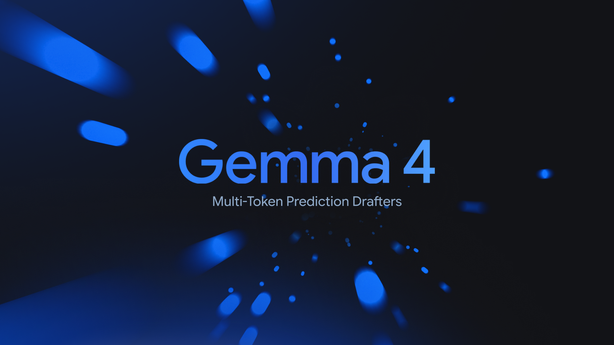
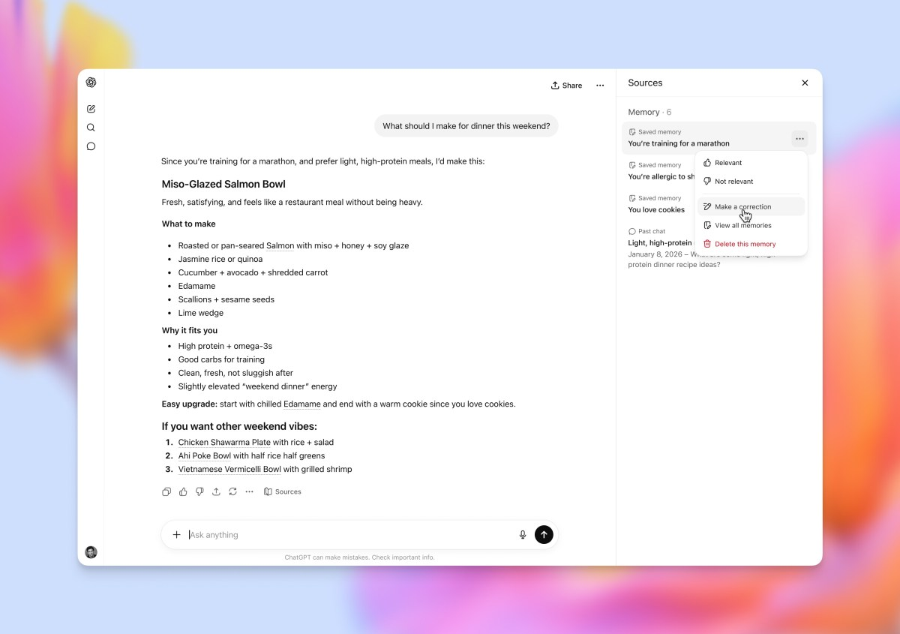
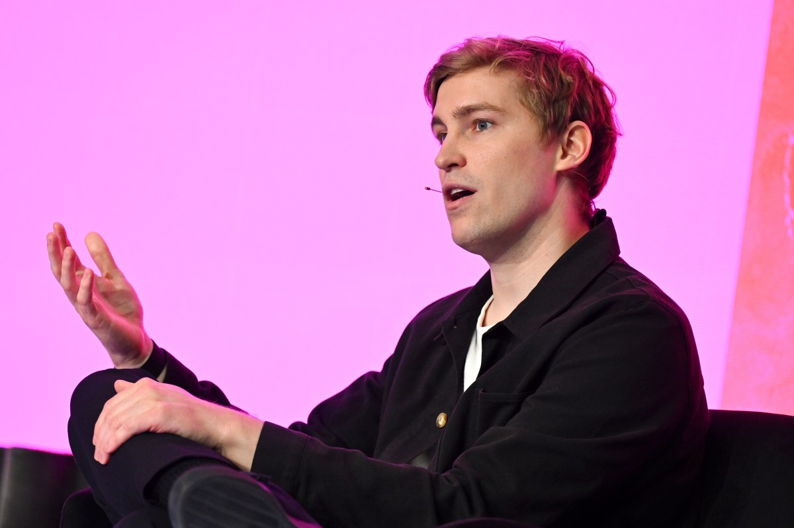

Pin · 昨日合資 今日產品 · Anthropic 把金融 AI 採購視窗從資本端推到 OPS 端。
Anthropic 5 月 5 日在官網發布 finance agents 套件，鎖定金融服務與保險產業的三條核心場景：企業級風控（risk and compliance review）、合規申報自動化（regulatory filing automation）、客服與理賠端到端 agent（claims and customer ops）。產品形態走 agent skill pack 路線，Claude 為底座搭配 Anthropic 自己訓練的金融專用評估器（finance-tuned evaluators）跑在企業私有部署堆疊上。
細節點三條值得記。第一，Anthropic 把整個套件包裝成符合 SR 11-7、SOC 2 Type II、HIPAA 三大金融保險合規框架，等於從第一天就把銀行採購最痛的審計頭關打掉。第二，Goldman Sachs 是早期合作客戶，這條和昨日 N°43 揭露的 Anthropic–Goldman 合資線完全對上 — 合資端拉進 Goldman 提供分銷通路，今日產品端把 Goldman 列為樣板客戶，整條鏈在 24 小時內收口。第三，Anthropic 同步釋出 Hacker News 168 分熱度的開發者文件，把 finance agents 的 evaluator 設計細節開放給第三方審視，走的是 Anthropic 慣用的「研究透明 → 採購信任」路線。
對應前情：5/4 N°39 Anthropic 因 usage policy 被 Pentagon 圈外、5/5 N°43 Anthropic 拉 Goldman 合資補金融端缺口。今日 finance agents 是這條補洞工程的第三根樁子，Anthropic 用「金融垂直深耕」當作政府訂單缺位的對沖部位。
第一，frontier 廠的金融垂直化從「概念」進入「產品 SKU」階段。過去六個月模型廠談金融多停留在合作公告與 PoC 階段。Anthropic 今日把 finance agents 切成三個明確場景並各自配 evaluator，等於告訴銀行 CIO「不必自己組 agent 了，我直接給你 SKU」。對 Salesforce Agentforce、ServiceNow Now Assist 等老牌 SaaS 平台是正面壓力，它們在金融垂直的領域知識護城河第一次被 frontier lab 用「模型 + evaluator + 合規包裝」繞開。
第二，Anthropic 的估值論述補上實質產品支撐。5/1 N°29 提到 Anthropic 9000 億估值傳聞，當時市場質疑點集中在「企業端 ARR 跑得起來嗎」。finance agents 給出的答案是垂直 SKU 路線而非通用 API 擴張。若 Goldman 等首批客戶在 Q3 內貢獻可量化 ARR 數字，Anthropic 下一輪募資的 IRR 故事會明顯更硬。對應風險是若 GPT-5.5 Instant（見 N°48）在金融場景測試表現對齊或超越 finance agents，Anthropic 的垂直深度差異化會被部分稀釋。
第三，金融 AI 採購的決策層級正式從 CIO 移到投資委員會與風控委員會。finance agents 不是 IT 工具而是合規工具，這個定位差異對銷售週期影響巨大。CIO 採購週期 8 至 12 週，投資委員會 + 風控委員會聯合採購週期 6 至 9 個月。Anthropic 透過 Goldman 的關係直接打進後者，等於把銷售引擎接到正確的決策層級。對 Sierra、Glean 等 agentic SaaS 新貴是壞消息 — 它們的關係多停在 CIO 層級。
三個看點：
(1) OpenAI–Blackstone 合資的對應產品線會在 Q3 跟進。昨日 N°43 揭 OpenAI 拉 Blackstone 進企業 AI 合資，產品端尚未公佈。Anthropic 今日把產品端先打出來，OpenAI 必然在 6 至 8 週內推對標 SKU。預期 OpenAI 不會走 Anthropic 的 evaluator 路線，而是用 GPT-5.5 Instant + 自家金融 fine-tune 模型的組合拳，差異化點壓在「同一個模型同時跑公開 ChatGPT 與企業 finance」帶來的成本曲線優勢。
(2) 銀行 CIO 與風控長的關係決定中期勝負。Anthropic 透過 Goldman 拿到的不只是客戶而是「銀行內部的 power user 證言」。這條證言在後續對 JPMorgan、Morgan Stanley、Citi 的銷售週期裡值錢。預期 Anthropic 在 Q3 內會擴出第二、第三家樣板客戶，每家銀行都帶一個明確場景。OpenAI 端則需要找到自己的「Goldman 等價物」，最合理的候選是 Bank of America 或 BlackRock 自己（Blackstone–OpenAI 合資路徑直送）。
(3) 反方觀點：金融垂直 SKU 的定義權之爭可能讓客戶鎖死成本。Anthropic finance agents 的 evaluator 是專屬，客戶一旦深度部署遷移成本高。對 CIO 視角這是「乾淨的解決方案」，對採購委員會視角這是「供應商鎖定」（vendor lock-in）。預期 Q4 會出現銀行端發起的 evaluator 開源化壓力，要求 Anthropic 把核心評估邏輯放到公共 spec。這條議題 Rick 的精英社群讀者短期可從 Goldman 等客戶實測回饋判斷產品上限，中期看 Anthropic 是否願意釋出 evaluator 治理權。

Pin · speculative decoding 從研究實驗變開源標配 · 推論成本曲線在 Q3 被重畫。
Google DeepMind 5 月 5 日在 Google blog 發布 Gemma 4 的 multi-token prediction（MTP）drafter 整合方案。技術核心是 Meta 在 2024 提出的 multi-token prediction 訓練目標：模型不只預測下一個 token 而是同時預測接下來 n 個 token，把預測得到的後續 token 直接當作 speculative decoding 的草稿（draft），主模型只需要做一次驗證 forward pass 而不必逐 token 跑。
Gemma 4 的差異化有三點。其一，drafter 不是外接小模型而是內建在主模型權重內，這意味著開源使用者拿到模型就拿到加速能力，不必額外訓練 draft model。其二，DeepMind 公布在 H100 與 TPU v5p 上的實測加速比落在 2.1 至 2.7 倍區間，明顯高於外接 draft model 路線常見的 1.5 至 2.0 倍。其三，技術細節 paper 同步發布並開源訓練腳本，開源社群可在 Llama 3.5、Qwen 3、Mistral 等主流家族複製。
Hacker News 上線 6 小時拿到 356 分熱度，留言區聚焦兩點：vLLM 與 SGLang 維護者已表示會在 1 至 2 週內合併 MTP path、本地部署社群（LM Studio、ollama）對「同一張顯卡跑更快推論」的興奮度明顯。
第一，開源推論加速從外接 draft model 路線正式轉向內建 MTP 路線。過去兩年 speculative decoding 的開源實作主要走「找一個小模型當 drafter」路線，缺點是需要額外維護 draft model 對齊度。Gemma 4 把 drafter 訓練成主模型的天然能力，開源使用者第一次能在不犧牲品質的前提下拿到 2 倍以上加速。對推論成本敏感的 SaaS、API 中介商、本地企業部署都是直接紅利。
第二，frontier 模型廠的「速度」競爭重新洗牌。OpenAI、Anthropic、Google 三家在 H1 的延遲競爭多依靠專屬硬體 + 軟體棧優化，開源模型這條軸明顯落後。Gemma 4 把專屬路線的核心 trick 反向開源，等於 Google 一邊用 Gemini 收 frontier 高端市場、一邊用 Gemma 替開源賽道翻盤。對 Meta Llama 4 是直接挑戰：若 Llama 4 在 Q3 沒有對標 MTP 整合，Meta 的開源霸主地位會被 Gemma 4 蠶食。
第三，AI 推論基礎設施的軟體護城河被部分填平。vLLM、SGLang、Ollama 等推論框架的部分價值來自於「實作 speculative decoding 的工程深度」。Gemma 4 把 MTP drafter 直接內建模型，框架層的差異化從「我有沒有 spec decoding」轉成「我整合 MTP 整合得多乾淨」。這個轉變對推論服務商（Together、Anyscale、Fireworks）是壓力，它們的價格優勢部分來自於工程護城河，現在護城河被開源模型本身填平一截。
三個看點：
(1) Q3 內主流開源模型家族會跟進 MTP。Gemma 4 開源訓練腳本後，Llama、Qwen、Mistral、DeepSeek 四大家族在下一個版本必然整合 MTP。預期 Qwen 4、Llama 4 在 6 至 10 週內發布內建 drafter 的版本，DeepSeek 等中國家族跟進速度更快（其 R1、V3 在推論成本敏感性上歷來最積極）。對中國端 AI infra 是利好，本地部署的算力需求會在不變模型品質下被壓低 30% 上下。
(2) Together、Fireworks 等推論服務商的定價壓力顯著上升。當開源模型自帶 2 倍加速能力後，推論服務商的「同一個模型我跑得更便宜」差異化空間被壓縮。預期 Q3 內 Together 等服務商會把定價重心從「每 1M token 多少美元」轉向「批次處理 + 訂閱模型」，類比早期雲端從計時收費轉向 reserved instance 的演化路徑。
(3) 反方觀點：MTP drafter 的品質代價需要更多獨立驗證。DeepMind 自報 2.1 至 2.7 倍加速、品質損失「可忽略」。獨立第三方（特別是 Stanford CRFM、HuggingFace）的 benchmark 跑出之前，工程界對「真正可上 production」這條結論需保留。對讀者：本週起可關注 vLLM 1.0 release notes 是否把 MTP path 標為 stable，那是判斷 MTP 路線真正可商用的客觀訊號。

Pin · 預設模型換代 · OpenAI 把賣點從「快」直接壓在「敏感領域更不會錯」。
TechCrunch 5 月 5 日報導：OpenAI 把 ChatGPT 預設模型從 GPT-5 Instant 升級為 GPT-5.5 Instant，免費與付費用戶下次刷新後即生效。OpenAI 在發布貼文與 X 貼文中強調三條賣點：法律、醫療、金融三大敏感領域的幻覺率（hallucination rate）相對 GPT-5 Instant 顯著下降，OpenAI 自報減幅落在 28% 到 41% 區間；同時推論延遲（time to first token、tokens per second）與 GPT-5 Instant 持平，沒有「為了準確犧牲速度」這條取捨；長記憶功能（memory）獲得結構化升級，使用者可主動標記哪些事實要進長期記憶。
OpenAI 在貼文中承認：GPT-5.5 Instant 並非全新模型架構，而是 GPT-5 Instant 的繼承版加上後訓練（post-training）強化 — 重點包括 RLHF 對敏感領域的專門 reward model、合成資料對「拒答 vs 推測」邊界的重訓練、以及在金融與醫療場景的對齊資料擴充。OpenAI 沒有揭露具體訓練數據規模或合作對象。Sam Altman 在 X 上加註：未來 ChatGPT 預設模型路線會走「Instant 系列頻繁迭代 + 旗艦 GPT-5.5 Pro 慢迭代」雙軌。
對應前情：4/30 N°07 OpenAI 解綁 Microsoft 後上 AWS Bedrock、5/3 N°36 Uber 4 個月燒光全年 Claude Code 預算、5/4 N°43 OpenAI–Blackstone 企業合資。今日 GPT-5.5 Instant 是 OpenAI 把消費端與企業端兩條軸同步推進的關鍵節點。
第一，OpenAI 第一次把「敏感領域幻覺率」當主打賣點而非附註。過去 OpenAI 模型升級的敘事核心多是「更聰明、更快、更便宜」。GPT-5.5 Instant 把賣點直接壓在金融、醫療、法律三條客戶最痛的高合規垂直，這條訊號等於告訴企業客戶「frontier 模型已經夠好可以進真實 ops 流程了」。對昨日才推出的 Anthropic finance agents（見 N°46）是直接對撞 — Anthropic 走專屬 evaluator + 私有部署路線，OpenAI 走「同一個模型給所有人」的水平整合路線。兩條路線的勝負取決於「客製深度 vs 通用便利」哪個更重要。
第二，ChatGPT 預設模型的迭代節奏明顯加快。GPT-5 系列上線到 GPT-5.5 Instant 的時間窗約 4 個月，遠快於 GPT-4 系列的 9 至 12 個月節奏。預設模型迭代加速的副作用是訓練資料貢獻者（包括出版商、KOL、開發者）的議價時間視窗被壓縮。對 Reddit、Stack Overflow、出版集團是壓力，它們的授權合約議價週期通常 6 至 9 個月，跟不上 OpenAI 的迭代節奏會被反向逼迫接受不利條款。
第三，OpenAI 的「企業 AI 信任度」敘事補上重要一塊。對企業客戶而言，預設模型在敏感領域的幻覺率本身就是採購條件。OpenAI 把這條提到主推位置，等於是把 GPT-5.5 Instant 直接放進企業採購視窗的判斷點。對 OpenAI–Blackstone 合資的 Q3 落地是直接利好，因為 Blackstone portfolio company 的內部採購流程會把「預設模型敏感領域品質」當核心 due diligence 指標。
三個看點：
(1) Anthropic 必然在 Q3 內以 Claude 4.5 或同等代號回應。Anthropic 不能讓 OpenAI 在敏感領域幻覺率敘事上單獨開車。預期 Anthropic 在 6 至 10 週內推 Claude 4.5 Sonnet 或 4.5 Haiku，主打方向會是「結合 finance agents evaluator 的端到端可驗證性」而非單純更低幻覺率。差異化敘事會壓在 Anthropic 慣用的 Constitutional AI + Responsible Scaling 框架。
(2) Google Gemini 在消費端的分流壓力擴大。ChatGPT 預設模型敘事主打金融醫療法律後，Gemini 的「整合到 Workspace」差異化空間被壓縮 — 企業客戶買 Gemini 主因是 Google Drive 與 Gmail 整合而非模型本身領先。預期 Google 會在 Q3 加速把 Gemini 3.5 Flash 升級為新預設並在 Workspace 通路強推 finance / healthcare 場景的 case study，但通路依賴度本身就是天花板。
(3) 反方觀點：OpenAI 自報 28 至 41% 幻覺降幅需要第三方驗證。HELM、HHEM、TruthfulQA 等公開 benchmark 的更新版尚未跑出 GPT-5.5 Instant 數據。在獨立 benchmark 跑出之前，「自報數字」對企業採購委員會的說服力有限。對 Rick 社群讀者：建議追蹤 Stanford HELM Leaderboard 與 Vectara HHEM Leaderboard 在未來 2 週內的 GPT-5.5 Instant 條目，那是判斷 OpenAI 敘事是否撐得住的客觀錨點。

Pin · 語音 AI 介面層被金融資本 + 好萊塢一次認證 · 介面壟斷之戰開始。
TechCrunch 5 月 5 日報導：語音 AI 公司 ElevenLabs 揭最新一輪投資人陣容並同步公佈業務指標。新增股東名單包括 BlackRock、Jamie Foxx、Eva Longoria 三位最有指標性，原有股東 Andreessen Horowitz、Sequoia、Salesforce Ventures 跟投。本輪估值落在 65 至 80 億美元區間（公司未正式揭露），ARR 越過 5 億美元門檻並維持 200% 上下年成長率，付費企業客戶超過 6000 家。
三條結構性訊息值得記。其一，BlackRock 是傳統金融資本而非科技 VC，加入 ElevenLabs 股東結構等於把語音 AI 的「資本身份」從 frontier tech 升級到主流配置資產。其二，Jamie Foxx 與 Eva Longoria 不只是名人投資而是有具體合作協議：Foxx 提供聲音授權給 ElevenLabs 拍片配音場景、Longoria 旗下製作公司 Hyphenate Media 用 ElevenLabs 做西語多區域配音。其三，企業客戶角度，ElevenLabs 揭與 Disney+、Netflix、Spotify、Audible 都有商業合作，Audiobook 與 podcast 多語化是收入主軸之一。
ElevenLabs 共同創辦人 Mati Staniszewski 在發稿信中強調公司未來 12 個月路線：擴張 voice agent SDK（API 層整合進客服與遊戲）、擴張多語多角色 voice cloning（影視與娛樂垂直）、擴張低延遲 streaming voice（企業內部 voice ops）。
第一，語音 AI 從「demo 技術」升級為「介面壟斷層」候選。過去兩年語音 AI 多被當成多模態能力的附屬子集。ElevenLabs 6000 家企業客戶 + 5 億 ARR 的數字告訴市場：voice 不只是 demo 而是已被 Disney、Netflix、Spotify 這類分發巨頭當作核心生產工具。一旦這個地位被確認，下一步是「介面壟斷之戰」 — voice 同時是 ChatGPT advanced voice 的競爭面、是 Sesame、Hume AI 的競爭面、也是 OpenAI low-latency voice AI（5/4 N°44 提到）的競爭面。
第二，BlackRock 的加入改變語音 AI 資本配置邏輯。BlackRock 投資的不是「下一個 unicorn」而是「未來 5 至 10 年的基礎設施類」資產。BlackRock 進場等於把 ElevenLabs 從 VC late stage 切到 long-only 資金的觀察名單。對其他 voice 玩家（Sesame、Hume、PlayHT）是壓力 — 它們的下一輪募資若沒有對等的傳統金融資本背書，估值倍數會被 ElevenLabs 拉開。
第三，名人聲音授權的商業化模型正式被驗證。Jamie Foxx 提供聲音授權的合約結構是「股權 + 版稅」，這條結構過去多停留在 SAG-AFTRA 與 frontier 廠的對抗敘事（5/4 N°41 Oscars 對 AI 演員下禁令是反向案例）。ElevenLabs 的合約讓「演員主動入股 + 提供授權」變成可複製範本，對好萊塢的中堅演員是新的收入軸。預期 Q3 內會看到第二批名人入股 ElevenLabs 的同類交易，Tom Hanks、Morgan Freeman、Robert De Niro 等以聲音為標誌的演員是合理候選名單。
三個看點：
(1) ElevenLabs 的 IPO 視窗在 2027 H1 開啟。5 億 ARR、200% 成長率、BlackRock 入股這三條同時打到位後，ElevenLabs 是 voice AI 賽道第一個有條件 IPO 的玩家。預期下一輪募資會走「pre-IPO 戰略輪」路線，估值上看 100 億美元。對好萊塢與唱片業的合作量化收入會是 IPO 故事的關鍵 — voice cloning 的合規風險（特別是死亡演員聲音的繼承權問題）若處理不夠乾淨會延後 IPO 視窗。
(2) OpenAI low-latency voice AI 是 ElevenLabs 最直接威脅。5/4 N°44 提到的 OpenAI low-latency voice AI 走「整合進 ChatGPT 預設體驗」路線，分發優勢遠超 ElevenLabs。ElevenLabs 的差異化必須壓在「企業客戶端的 voice cloning 深度 + 多語多區域」這個 OpenAI 短期不會深耕的場景。預期 Q3 內 ElevenLabs 會推出更明確的 voice agent SDK 對標 OpenAI realtime API，差異化點在「客戶帶進自己的演員聲音」這條 IP 層護城河。
(3) 反方觀點：voice cloning 的法務風險仍是估值天花板的關鍵變數。BlackRock 等傳統資本進場後，ElevenLabs 對未授權聲音克隆的容忍度必須往零靠攏。過去兩年 ElevenLabs 因 deepfake 內容多次上 the Verge 與 Wired，雖然公司已部署 voice authentication 工具但仍非全面解。對讀者：本季關注 ElevenLabs 是否在 Q3 內推出強制 voice fingerprint 註冊機制，這條動作是判斷 ElevenLabs 對機構投資人「合規敘事」是否認真的客觀訊號。